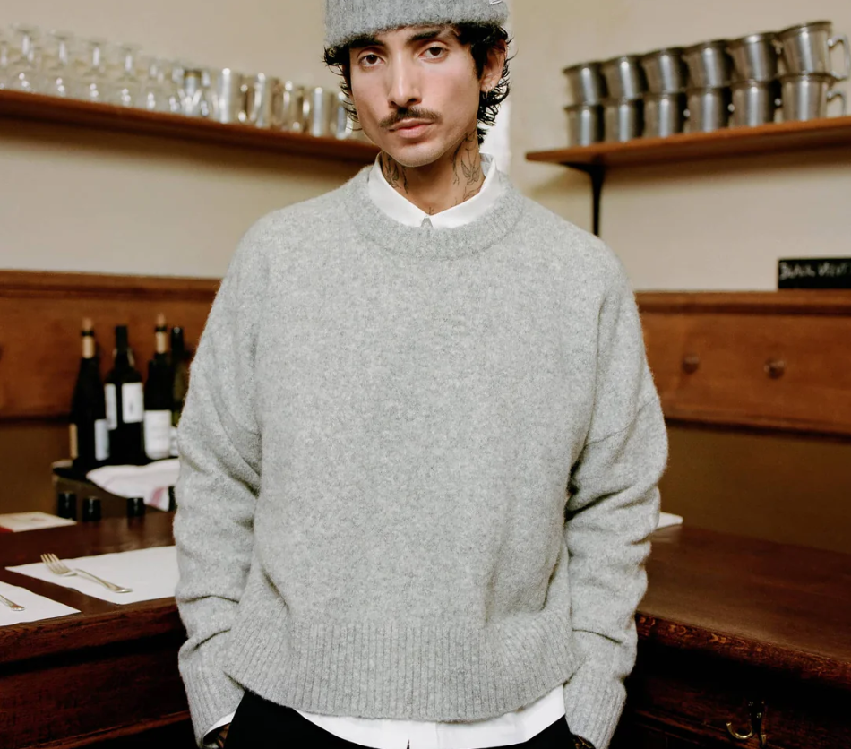

October 2024 Picks
A Look into what I like for October 2024
Pick 1: Oversized Coat By Zara

Embrace the cozy elegance of this Oversized Fit Coat from Zara. Crafted from a luxurious wool blend fabric, this coat features a notched lapel collar, long sleeves with buttoned cuffs, flap pockets at the hip, an inside pocket, and a central back vent. I can see this wore with either trousers or jeans, and a nice shirt making it perfect for both casual and formal occasions. I can see this being worn to the office in the autumn/winter, but also for food or drinks in town with friends.
Price: £169.00
Pick 2: V2 Hoddie By Seventh Stores
Embrace the cozy elegance of this Oversized Fit Coat from Zara. Crafted from a luxurious wool blend fabric, this coat features a notched lapel collar, long sleeves with buttoned cuffs, flap pockets at the hip, an inside pocket, and a central back vent. The front button fastening adds a classic touch, making it perfect for both casual and formal occasions. I can see this being worn to the office in the autumn/winter, but also for food or drinks in town with friends.
Price: £169.00
Pick 3: Knitted Crewneck By About Blank
The Moderate Knitted Crewneck from About Blank is a standout piece despite its £200 price tag. The quality of this jumper justifies its cost, as it's crafted from high-quality materials that provide both comfort and style. I can easily see it being worn with a shirt underneath and paired with nice black trousers for a polished look. About Blank is a brand I really like, known for their stylish, yet understated pieces. The attention to detail and the quality of their products explain the higher price point, making it a worthy addition to any wardrobe.
Price: £200.00